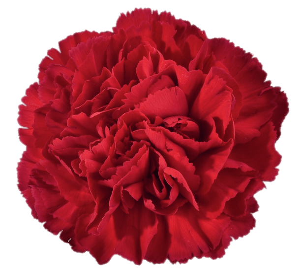
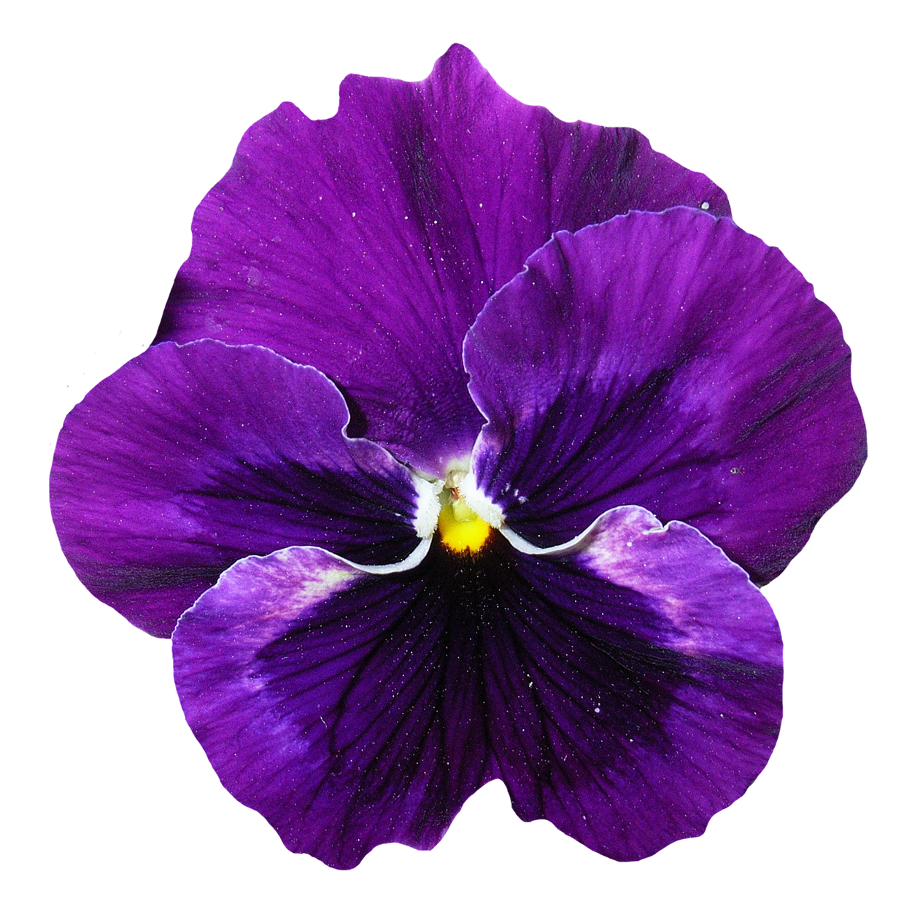
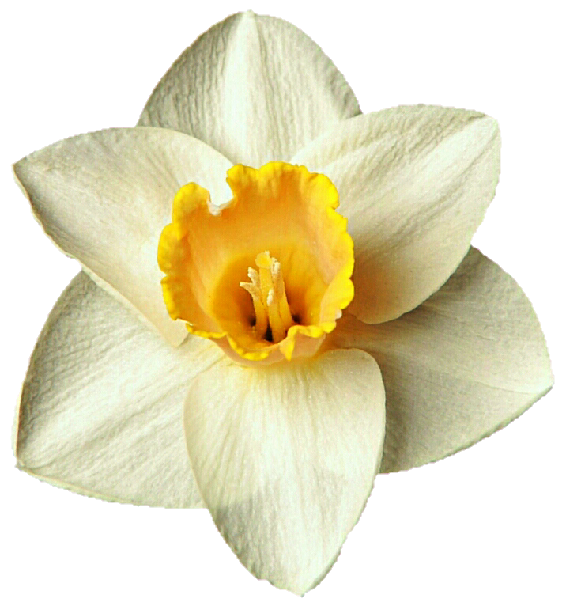
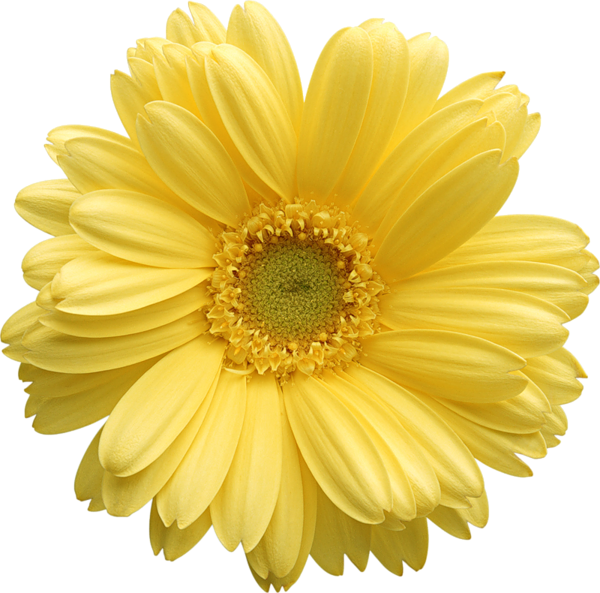
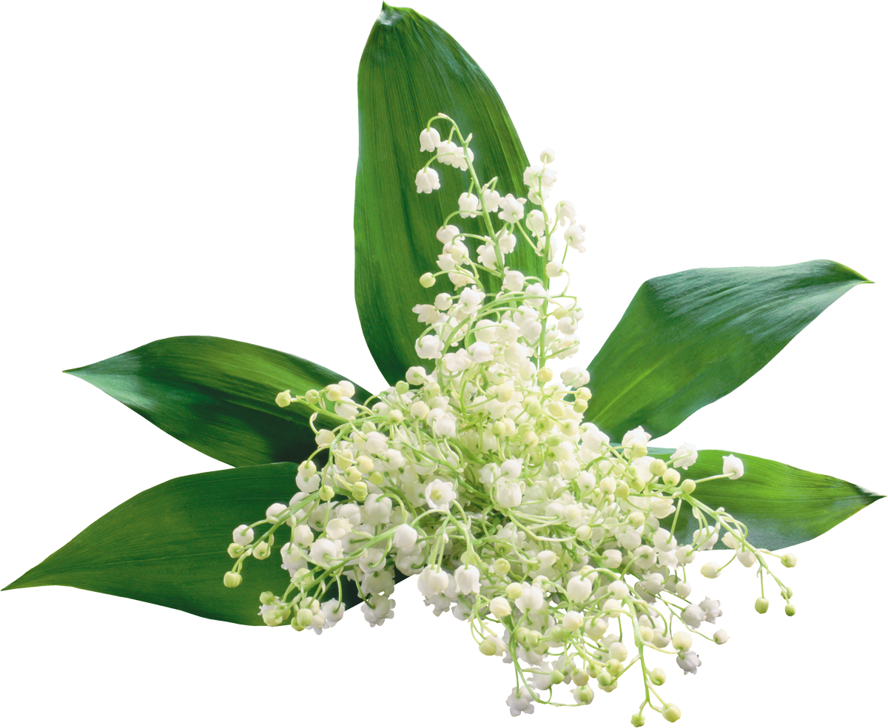
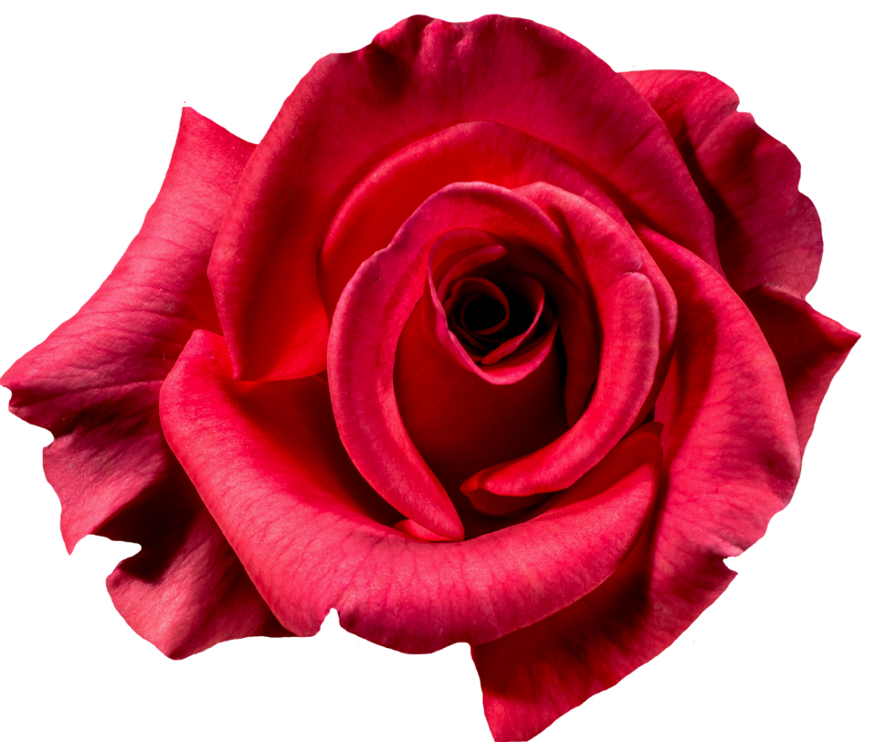
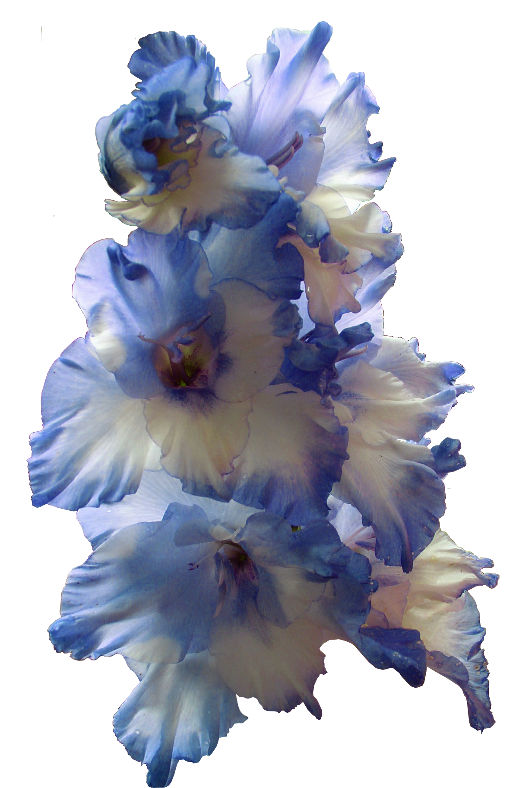
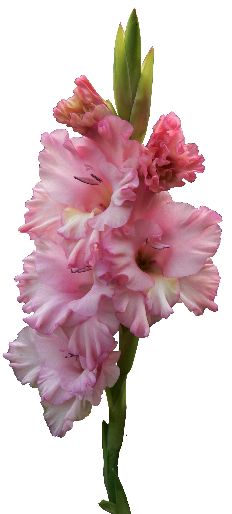
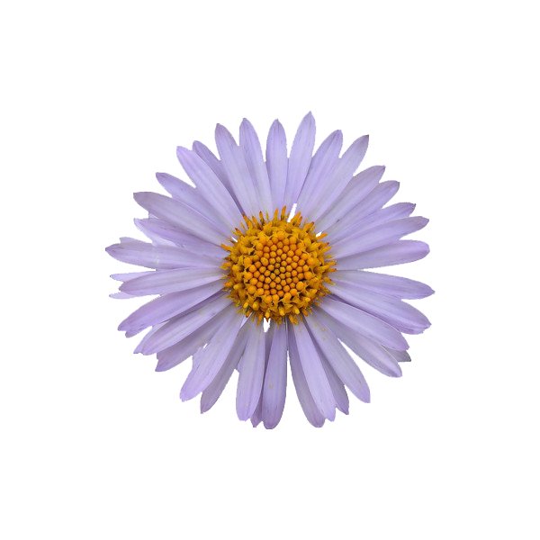

The birth flower for the month of January is the Carnation. Carnations are often associated with fascination, distinction, and love. Different colors of carnations can convey different meanings, with red carnations typically symbolizing deep love and admiration, white carnations representing pure love and good luck, and pink carnations signifying gratitude and appreciation.

In the intricate tapestry of birth flowers, February unveils the Violet as its emblematic bloom. These delicate blossoms not only captivate with their innate beauty but also exude an air of mystery, adding an element of intrigue to the February landscape. The Violet, with its velvety petals and subtle fragrance, becomes a poetic symbol of enchantment, as if nature has woven a secret garden that thrives with unseen wonders. As February unfolds, the Violet beckons individuals to explore the hidden realms of nature's beauty and uncover the enchanting stories whispered by each delicate bloom within its clandestine sanctuary.

The birth flower for the month of March is the Daffodil. Daffodils are known for their vibrant yellow hues and trumpet-shaped blossoms, heralding the arrival of spring. Symbolically, Daffodils represent renewal, hope, and the promise of new beginnings. As the earth awakens from its winter slumber, the cheerful Daffodils emerge, bringing with them a sense of optimism and the anticipation of brighter days ahead. These flowers are a delightful embodiment of the rejuvenating spirit of spring and are often associated with positive energy, growth, and the celebration of life.

The birth flower for April is the Daisy. With its pure white petals and sunny yellow center, the Daisy symbolizes innocence, purity, and new beginnings. These cheerful blooms often thrive in open fields and meadows, representing freedom and childlike wonder. Daisies carry a message of hope and positivity, reminding us that beauty often resides in the simplest moments. As April’s gentle rains awaken the earth, Daisies bloom as bright messengers of renewal and quiet happiness.

May’s birth flower, the Lily of the Valley, enchants with its tiny, bell-shaped blossoms and delicate fragrance. This flower symbolizes humility, sweetness, and the return of happiness. Often found hidden beneath leafy greens, its modest beauty reflects the quiet strength and tenderness of the human spirit. As the season of growth deepens, the Lily of the Valley stands as a symbol of joy restored and hearts made new.

The Rose, the timeless emblem of June, embodies love, passion, and perfection. With its layers of soft petals and intoxicating fragrance, the Rose tells a story of deep emotion and enduring beauty. Across colors and cultures, the Rose communicates the full spectrum of human feeling—from the blush of first love to the serenity of lasting devotion. June’s Roses remind us that true beauty often blooms amidst both sunlight and thorns.

July’s flower, the Larkspur, captures the essence of joy, positivity, and openheartedness. With tall spires of violet, pink, or blue blossoms, these flowers seem to dance in the summer breeze. They symbolize lightness of spirit and a willingness to embrace life’s adventures. The Larkspur’s graceful ascent toward the sun reminds us to live boldly, love freely, and let our spirits soar.

The Gladiolus, radiant and regal, is the birth flower for August. Known for its tall stalks and brilliant blooms, it symbolizes integrity, strength of character, and remembrance. Its name, derived from the Latin word gladius meaning “sword,” reflects the flower’s shape and its message of courage. As the last blaze of summer unfolds, the Gladiolus stands as a vibrant reminder of resilience and inner valor.

The Aster graces September with its celestial beauty. Symbolizing faith, wisdom, and love, these star-shaped flowers bloom when many others fade, marking endurance and steadfast affection. Their colors—ranging from soft lavender to vivid purple—mirror the calm dignity of early autumn skies. The Aster teaches that even in life’s quiet moments, brilliance can shine softly and enduringly.